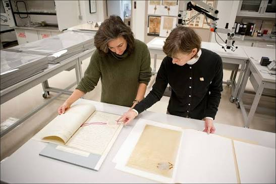

What Archivists Do
Archivists do more than shelve old papers. They decide what to collect, make sure it is authentic and in good condition, and describe it so that other people can find it. Their goal is to keep records usable for the long term.

Photo credit: Michelle Farnsworth
Two ideas guide much of this work. Provenance means keeping track of who created or owned a set of records. Original order means keeping records arranged the way their creator kept them, because that arrangement shows how the person or group worked.
The Main Steps
| Step | What happens | Why it matters |
|---|---|---|
| Appraisal | Deciding which records have lasting value | No archive can keep everything, so choices shape the record |
| Arrangement | Organizing records into groups | Keeps context and makes records easier to use |
| Description | Writing finding aids and catalog entries | Lets researchers discover what exists |
| Preservation | Storing and repairing materials safely | Slows damage from light, heat, pests and handling |
| Access | Helping people use records in person or online | Records only matter if people can reach them |
To learn more about the profession, visit the Society of American Archivists.